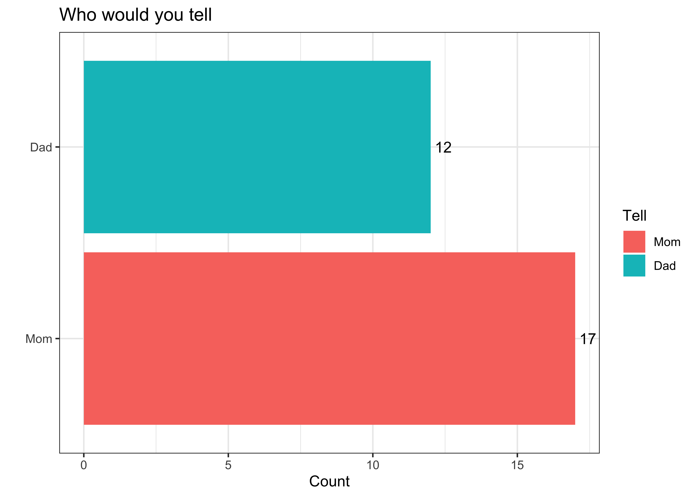

Week 01:
Describing Data in R
Overview
General Plan
Review
Feedback
Questions
Lecture consists of a mix of:
Topics and concepts
Exercises
Summary
Slides
Follow along here: https://pols1600.paultesta.org/slides/01-slides.html
Type the letter
oto get an overview to help you navigate.We have a LOT to cover today
- We’ll take time to focus on what you need to know
- Other things we’ll cover more quicky
- These are things that will be good to know eventually
We’ll review this material again on Thursday and our first “lab” will be a joint excercise
Several slides and tables borrow heavily from notes provide by the amazing Allison Hill
Waitlist
Course is currently at capacity. May be able to admit a few more if people drop…
Let me know after Thursday’s lab if you’re still interested in taking the course
Working in R and R Studio
Hopefully you all have installed R and R Studio: https://pols1600.paultesta.org/labs/00-software_setup.html
If you’re having issues, don’t worry, see me after class and we’ll get it sorted.
Loading data from QSS
Once you’ve done the following:
Anywhere the text loads data:
You can do
Tutorials
Once you’ve done the following
You can see the available problem sets by running the following code in your console:
Tutorials
And start a specific tutorial by running:
background-image:url(“https://upload.wikimedia.org/wikipedia/en/thumb/0/04/How_to_Get_Away_with_Murder_season_5_poster.jpg/220px-How_to_Get_Away_with_Murder_season_5_poster.jpg”) background-size:contain
You’ve committed a murder
Why?
Why do you ask?
It’s cousin Nick’s fault…
| - I think it’s a funny question that reveals interesting things about our relationships with our parents |
- What assumptions are we making when we ask this question?
| - You’re not a murderer |
|---|
| - You don’t know someone who’s committed a murder or been murdered |
- You’ve got a mom and dad
–
- How might we make this question better?
–
- Use a screener question
- “Would you feel comfortable…”
- “Pipe” in responses from a prior question
- “Who are two people who raised you…”
–
What questions we ask and how we ask them matters
Hopes and Dreams, Fears and Worries
.pull-left[ What are we excited about
- Engaging with social science
- Learning statistics and math
- Learning to code ]
| .pull-right[ What are we worried about |
|---|
| .pull-right[ You |
| - Do the reading, come class, ask questions - Engage with labs and tutorials with a “growth mindset” - Ask questions throughout - Come to office hours! ] |
| class: inverse,center, bottom background-image:url(“https://media2.giphy.com/media/ZCNjymWszyazkph0z2/200.webp?cid=ecf05e47l0nwxqty4s1m0l4bn43cpkl6wapqcbipk1a4otyt&rid=200.webp&ct=g”) background-size: cover # How you doin |
| class: inverse,bottom,center background-image:url(“https://media.giphy.com/media/KQER23aFnrfSU/giphy.gif”) background-size: cover # Menza Menz |
| ## Testa’s 50-50 rule |
| - When I was in your shoes… |
COME TO CLASS
- When I was in grad school I often felt like I understood only 50% of what was taught
| - As I took more classes, I realized that actually understood only about 50% of that initial 50% |
|---|
| - That’s your target. - Don’t worry about getting everything right - Focus on getting better each class |
| ## Goals |
| Today we’ll explore COVID-19 data in the U.S. We’ll try to answer to one question. |
| > On average, did states that adopted mask mandates have lower rates of new cases? |
Seems simple right?
Topics
Working with R Markdown files
Basic Programming in R
Setting up your work space
Loading data into R
Looking at your data
Cleaning and transforming your data
Describing typical values and variation in your data
Exercises
Create an R Markdown File
Explore objects and functions in base
RInstall the
tidyverseandCOVID19packages and reading data in RExploring Covid-19 Data
Transforming our data with the tidyverse
Describing our data
class: inverse, center, middle # 💡 # Working with R Markdown files
YAML + Markdown + R -> Render -> Output
R Markdown Workflow
- Open a .Rmd
- Choose your output
- Update the YAML
- Write text in Markdown
- Embed your R code in code chunks
- Render your document using
knitrto knit your code and markdown into chosen output
Cheatsheet: https://www.rstudio.com/wp-content/uploads/2015/02/rmarkdown-cheatsheet.pdf
class: inverse, center, middle background-image: url(“https://media.giphy.com/media/fwWCuPYI6rE2jGNsrk/giphy.gif”) background-size: contain
💪
1. Create an R Markdown File
Tips for working in R Markdown
- YAML controls output
- Format text using Markdown syntax
- Write code in chunks
- Control output of code chunks with options.
- Knit your documents to produce output.
class: inverse, center, middle # 💡 # Basic Programming in R
The Basics of R
R is an interpreter (>)
“Everything that exists in R is an object”
“Everything that happens in R is the result of a function”
Packages make R great
R is an interpreter (>)
–
Enter commands line-by-line in the console
–
- The
>means R is a ready for a command
–
- The
+means your last command isn’t complete
–
- If you get stuck with a
+use your escape key!
–
Send commands from your R script (.Rmd or .R file) to the console:
cntrl + Enter(PC) |cmd + Return(Mac) -> run current linecntrl + shift + Enter(PC) |cmd + shift + Return(Mac) -> run all code in current chunk
R is a Calculator
| Operator | Description | Usage |
|---|---|---|
| + | addition | x + y |
| - | subtraction | x - y |
| * | multiplication | x * y |
| / | division | x / y |
| ^ | raised to the power of | x ^ y |
| abs | absolute value | abs(x) |
| %/% | integer division | x %/% y |
| %% | remainder after division | x %% y |
R is logical
.pull-left[
| Operator | Description | Usage |
|---|---|---|
| & | and | x & y |
| | | or | x | y |
| xor | exactly x or y | xor(x, y) |
| ! | not | !x |
]
.pull-right[
]
logical vs exclusive OR
|is inclusive, sox|ymeans- x is true or
- y is true or
- both x and y are true
xoris exclusive soxor(x,y)means- x is true or
- y is true
- but not both
R can make comparisons
| Operator | Description | Usage |
|---|---|---|
| < | less than | x < y |
| <= | less than or equal to | x <= y |
| > | greater than | x > y |
| >= | greater than or equal to | x >= y |
| == | exactly equal to | x == y |
| != | not equal to | x != y |
| %in% | group membership* | x %in% y |
| is.na | is missing | is.na(x) |
| !is.na | is not missing | !is.na(x) |
*(shortcut to using | repeatedly with ==)
When we’ll use logic and comparison in R
Logic and comparisons are useful for:
- Probability
- What’s the probability that state adopts (
A==1) a mask mandate if Biden won its Electoral College votesPr(A==1 | B==1)
- What’s the probability that state adopts (
- Subsetting the data
- We only want to look at states Biden won Electoral College vote (select only states where
A==1)
- We only want to look at states Biden won Electoral College vote (select only states where
- Transforming data / creating new variables
- We want to create an indicator of states that Biden won which also adopted mask mandates (
A== 1 & B == 1)
- We want to create an indicator of states that Biden won which also adopted mask mandates (
Everything that exists in R is an object
- The number 5 is an object in R
- We can assign the object 5, the name x, using the assignment operator
<-+
- Now if we tell R to show us x, we’ll get
Data come in different types

Data come in different types
.pull-left[ * Numeric (2 subtypes) - Integers (1, 50) - Double (1.5, 50.25, ?double) * Character ("hello") * Factor (grade = "A" | grade = "B") * Logical (TRUE | FALSE)
]
.pull-right[
[1] "numeric"[1] "integer"[1] "logical"[1] "character"[1] "factor"]
Data come in different “shapes” and “sizes”
Name | “Size” | Type of Data | R code –|-||– scalar | 1 | numeric, character, factor, logical | x <- 5 vector | N elements: length(x) |all the same |v <- c(1, 2, T, "false") matrix | N rows by columns K: dim(x) | all the same |m <- matrix(y,2,2) array | N row by K column by J dimensions: dim(x) |all the same | a <- array(m,c(2,2,3)) data frames | N row by K column matrix | can be different | d <-data.frame(x=x, y=y) tibbles | N row by K column matrix | can be different | d <-tibble(x=x, y=y) lists | can vary | can be different | l <-list(x,y,m,a,d)
- We will mostly work with data.frames and tibbles (a data.frame with added bells and whistles) |
| background-image: url(https://miro.medium.com/max/1400/0*MgEQsDgZZ7fJcdhZ.png) background-size: cover class: top, right |
| #### Source: Gaurav Tiwari |
| ## Why data types and structures matter |
- R treats different data types differently - This can be a source of error and opportunity - For example, we can use: - vectors to store values to select variables or label plots |
| ::: {.cell layout-align=“center”} |
{.r .cell-code} my_vars <- c("variable_name1","variable_name2") ::: |
- matrices to do math |
| ::: {.cell layout-align=“center”} |
{.r .cell-code} M1 <- M2 <- matrix(1:4,2,2) M1 %*% M2 |
| ::: {.cell-output .cell-output-stdout} |
[,1] [,2] [1,] 7 15 [2,] 10 22 |
| ::: ::: |
- data.frames/tibbles to store and manipulate data - lists to store complex outputs, like say the results of estimating six slightly different models |
| For now, just know that these differences exist and matter. |
| ## Everything that happens in R is the result of a function |
- You’ve already seen and used some R functions - the <- is the assignement operator that assigns a value to a name - c() is the combine function that combines elements together - install.packages() installs packages - library() loads packages you’ve installed so you can use functions and data that are part of that package |
| ## Three sources of functions |
- Three sources of functions: - base R <-; mean(x); library("package_name") - packages remotes::intall_github("user/repository") - You my_function <- function(x){x^2} |
| ## Functions are like recipes |
| They have |
| .pull-left[ - names |
| - ingredients (inputs) |
| - steps that tell you what to do with the ingredients (statements/code) |
| - tasty results from applying those steps to given ingredients (outputs) ] |
| .pull-right[ |
| ::: {.cell layout-align=“center”} |
| ```{.r .cell-code} can_x_kick_it <- function(x){ # Determine if x can kick it # If x in A Tribe Called Quest if(x %in% c(“Q-Tip”,“Phife Dawg”, “Ali Shaheed Muhammad”, “Jarobi White”)){ return(“Yes you can”) }else{ return(“Before this, did you really know what live was?”) } |
| } can_x_kick_it(“Q-Tip”) ``` |
| ::: {.cell-output .cell-output-stdout} |
[1] "Yes you can" |
| ::: |
{.r .cell-code} can_x_kick_it("Paul") |
| ::: {.cell-output .cell-output-stdout} |
[1] "Before this, did you really know what live was?" |
| ::: ::: |
| ] |
| ## When we’ll use functions |
- All the time (“Everything that happens in R is the result of a function”) - Most of the time we’ll use functions that are part of base R or some package we’ve installed and loaded - Later, we’ll start to write our own functions - This is particularly useful when you find yourself copying and pasting the same code over and over. |
| class: inverse, center, middle background-image: url(“https://media.giphy.com/media/Nf8vX5K7AHcAg/giphy.gif”) background-size: cover |
# 💪 # 2. Explore objects and functions in base R |
| ## Create some simple objects |
| In the .Rmd file you created for this class |
| 1. Delete the template (everything below the YAML Header) 2. Create a new code chunk (cmd/cntrl + shift + I) 3. Copy the following into your code chunk and interpret the results: |
| ::: {.cell layout-align=“center”} |
| ```{.r .cell-code} # Create objects x <- 5 y <- T z <- 1:5 |
| # Look at objects x y z |
| # Manipulate objects x*x y+x x^z ``` ::: |
| ## Create some more complex objects |
| .pull-left[ - Run the following code - If you have the slides open, there should be an icon you can hover over to copy all the code. - Print the objects in R’s console] |
| .pull-right[ |
| ::: {.cell layout-align=“center”} |
{.r .cell-code} v <- c(1, 2, T, "false") # Vector m <- matrix(y, nrow = 2, ncol = 2) # Matrix a <- array(m, c(2, 2, 3)) # Array d <- data.frame(x = x, y = y) # Dataframe t <- tibble(x = x, y = y) # Tibble l <- list(x, y, m, a, d, t) # List ::: |
| ] |
| ## Summary Coding in R |
| - We use functions to manipulate objects in R - Class/type/mode of objects matters - Use # to comment your code - Give objects meaningful names - Use consistent naming conventions: - snake_case - CamelCase - SpONgeBObCaSE (don’t do this) |
| class: inverse, center, middle # 💡 # Setting up your work space |
| ## Getting set up to work in R |
| Each time you start a project in R, you will want to: |
| 1. Set your working directory to the source file location - Session > Set Working Directory > Source File Location - Make sure your document is saved in folder with the other files (e.g. data) you’ll need |
| ## Getting set up to work in R |
| 1. Set your working directory to the source file location |
- Load (and, if needed, install) R packages that you will be using
- Install packages once with
install.packages("package_name") - Load packages to use during your work session with
library("package_name") - Periodically check for updates in package panel on the lower right
Getting set up to work in R
Set your working directory to the source file location
Load (and, if needed, install) R packages that you will be using
–
- Change any “global” options you want
- I’ll typically do this for you
- Useful for controlling how code or figures are displayed
# Options for these slides
knitr::opts_chunk$set(
warning = FALSE, # Don't display warnings
message = FALSE, # Don't display messages
comment = NA, # No prefix before line of text
dpi = 300, # Figure resolution
fig.align = "center", # Figure alignment
out.width = "80%", # Figure width
cache = FALSE # Don't cache code chunks
)Getting set up to work in R
Set your working directory to the source file location
Load (and, if needed, install) R packages that you will be using
Change any “global” options you want
–
- Load the data you’re going to be using
class: inverse, center, middle # 💡 # Loading data into R
Loading data into R
There are three ways to load data.
- Load a pre-existing dataset
data("dataset")will load the dataset named “dataset”data()will list all datasets- Useful for tutorials, working through examples/help
- Load a .Rdata/.rda file using
load("dataset.rda") - Read data of a different format (.csv, .dta, .spss) into R using specific functions
- We will use functions from the
havenandreadrpackages to read data from the web and stored locally on your computer
- We will use functions from the
class: inverse, center, middle background-image: url(“https://miro.medium.com/max/612/1*GS0ohg3qm14E4Ya7fljicw.jpeg”) background-size:cover
💪
3. Installing packages and reading data in R
Installing the tidyverse and COVID19 packages
Let’s install the tidyverse and COVID19.
- Create a new code chunk
- Label it
libraries - Copy and paste the following into your console
Loading the tidyverse and COVID19 packages
- Type the following into your code chunk:
Loading state-level data
.pull-left[ Now we can use the covid19() to read in data about COVID19 in the US
To do so we’ll suppy three arguments:
country = UStells the function we want data for the USlevel = 2tells the function we want state-level dataverbose = Ftells the function not to print other stuff ] .pull-right[
]
class: inverse, center, middle
💡
Looking at your data
High Level Overviews
Anytime you load data into R, try some combination of the following to get a high-level overview of the data
dim(data)gives you the dimensions (# of rows and columns)View(data)opens data in a separate paneprint(data); datawill display a truncated view of data in your consoleglimpse(data)will show a transposed (switch columns and rows) version of data with information on variable typehead(data)shows you the first 5 rowstail(data)shows you the last 5 rowsglimpse(data)data$variableextractsvariablefromdatatable(data$variable)creates a frequency table- Good for categorical data
summary(data$variable)summary statistics- Good for numeric data
High Level Overview allow you to
These HLOs allow you to
- Describe the structure of your data:
- How many observations (rows)
- How many variables (columns)
- Describe the unit of analysis
- What does a row in your data correspond to
- Indetify the class and type of variables (columns)
- Numeric, categorical, logical
- Is there missing data (
NAs)
class: inverse, center, middle background-image: url(“https://media.makeameme.org/created/data-dataeverywhere.jpg”) background-size:contain # 💪 # 4. Exploring Covid-19 Data
Exploring Covid-19 Data
- Create a new chunk
- Label it explore_data
- Type the following
Answer the following
- How many observations are there (rows)
- How many variables (columns)
- What’s the unit of analysis? -In words, how would you describe what a row in your data set corresponds to?
- Are there any missing values for
confirmed - Range of values can
stay_home_restrictionstake
Answer the following
.pull-left[ - How many observations are there (rows)
- How many variables (columns)
] .pull-right[ - What’s the unit of analysis? A “‘State’-Date”
date administrative_area_level_2
1 2020-03-16 Northern Mariana Islands
2 2020-03-17 Northern Mariana Islands]
Answer the following
- Is there missing data in
confirmed
- What values can
stay_home_restrictionstake
Summary
We used: - dim() to get a sense of the size of our data - View()/glimpse/print() helped us describe the structure (State-Date) - summary() and table() to get a quick sense of some variables - What’s up with the negative values of stay_home_restrictions - https://covid19datahub.io/articles/docs.html - The index operator [] to select values we wanted - We used the %>% operator to chain together functions to help us look at the data
class: inverse, center, middle # 💡 # Data Wrangling in the Tidyverse
class: inverse, middle, center # The Tidyverse

“The tidyverse is an opinionated collection of R packages designed for data science. All packages share an underlying design philosophy, grammar, and data structures.”
The Tidyverse: What we’ll learn today
- What is tidy data
- How to use the pipe
%>%to make our code more intuitive - In our exercise we will see how to use the following from the
dplyrpackage:filter()to filter rows in our datamutate()to create new columns in our datacase_whento create new columns in our data based on existing columnsgroup_byto apply functions by a grouping variablesummarizeto summarize the results of a function
Tidy Data
Tidy data is a standard way of mapping the meaning of a dataset to its structure.
A dataset is messy or tidy depending on how rows, columns and tables are matched up with observations, variables and types. In tidy data:
Every column is a variable.
Every row is an observation.
Every cell is a single value.
class: center, middle, inverse
%>%
The pipe
“dataframe first, dataframe once”
–
–
RStudio Keyboard Shortcuts:
OSX: CMD + SHIFT + M
Else: CTRL + SHIFT + M
class: middle
Nesting a dataframe inside a function is hard to read.
–
Here, the “sentence” starts with a verb.
–
Piping a dataframe into a function lets you read L to R
–
Now, the “sentence” starts with a noun.
class: middle
Sequences of functions make you read inside out
–
Chaining functions together lets you read L to R
class: inverse, center, middle background-image: url(“https://hms.harvard.edu/sites/default/files/media/DNA%20large.jpg”) background-size: cover # 💪 # Excerise 5. Wrangling with the Tidyverse
Tasks
- Subset our Covid data to include only the 50 states + DC
filter()
- Create two new variables that capture the # of new cases and face mask policy in place
mutate()withcase_when()
Subseting our data
- Create a vector of the territories we don’t want
- Use the
filter()command to “filter” out these territories
1. Create a vector of the territories we don’t want
2. Use the filter() command to “filter” out these territories
[1] 80156 47[1] 73354 47The command:
Filters data based on the logical statement:
Without the !,
Tells us which observations are from U.S. territories. The ! “negates” this logical comparison
So it tells us which observations are not U.S. territories.
Creating new variables with mutate()
.pull-left[ - Copy administrative_area_level_2 into new variable `state - Group by state - Calculate the number of new cases - Scale this number per 100,00 citizens] .pull-right[
[1] 73354 47covid_us %>%
mutate(
state = administrative_area_level_2,
) %>%
dplyr::group_by(state) %>%
mutate(
new_cases = confirmed - lag(confirmed),
new_cases_pc = new_cases/population *100000
) -> covid_us
dim(covid_us)[1] 73354 50]
Creating new variables with mutate() and case_when()
covid_us %>%
mutate(
face_masks = case_when(
facial_coverings == 0 ~ "No policy",
abs(facial_coverings) == 1 ~ "Recommended",
abs(facial_coverings) == 2 ~ "Some requirements",
abs(facial_coverings) == 3 ~ "Required shared places",
abs(facial_coverings) == 4 ~ "Required all times",
) %>% factor(.,
levels = c("No policy","Recommended",
"Some requirements",
"Required shared places",
"Required all times")
)
) -> covid_usclass: inverse, center, middle # 💡 # Describing typical values and variation in your data
Descriptive Inference
When social scientists talk about descriptive inference, we’re trying to summarize our data and make claims about what’s typical of our data
| - What’s a typical value - “Measures of central tendency” |
|---|
| - How do our data vary around typical values - “Measures of dispersion” |
- How does variation in one variable relate to variation in another
- “Measures of association”
Using R to Summarize Data
Here are some common ways of summarizing data and how to calculate them with R
| Description | Usage |
|---|---|
| sum | sum(x) |
| minimum | min(x) |
| maximum | max(x) |
| range | range(x) |
| mean | mean(x) |
| median | median(x) |
| percentile | quantile(x) |
| variance | var(x) |
| standard deviation | sd(x) |
| rank | rank(x) |
All of these functions have an argument called na.rm=F. If your data have missing values, you’ll need to set na.rm=F (e.g. mean(x, na.rm=T))
class:inverse,center, middle background-image:url(“https://i.pinimg.com/originals/83/5c/33/835c33d22fd2ae61cbf0c14545524d54.jpg”) background-size:cover # 💪 # 6. Describing our data
Describing our data
We’re finally ready to answer that simple question we began class with
On average, did states that adopted mask mandates have lower rates of new cases?
To do so use the following functions
filter()andis.na()to only look at cases where we have data on face mask requirementsmean()to calculate the average number of new casesgroup_by()to calculate this mean separately for each level of face mask policysummarize()to summarize our results
Face Masks and New Covid-19 Cases (per 100k)
Face Masks and New Covid-19 Cases (per 100k)
.pull-left[
What should we conclude?
What’s wrong with this simple comparison?
What’s a better comparison? (Thursday)
]
.pull-right[
| Face Mask Policy | Average No. of New Cases |
|---|---|
| No policy | 10.26 |
| Recommended | 16.61 |
| Some requirements | 36.18 |
| Required shared places | 29.38 |
| Required all times | 32.18 |
]
background-image:url(https://memegenerator.net/img/instances/84491541.jpg) background-size:contain
Summary
- We covered A LOT
- It’s ok to feel overwhelmed
- But please don’t suffer in silence
- Don’t worry if everything didn’t make sense.
- Eventually it will, but this takes time and practice
Summary
Hopefully you learned something about the following:
- How to create .Rmd files and run code in R
- How to install and use packages in R
- How to load, view, and describe data
Next
Thursday Lab: Further explorations of COVID-19 data
- If you’re on the waitlist and still want to take the class, let me know
Friday: Tutorials 1 and 3 due on Canvas

POLS 1600